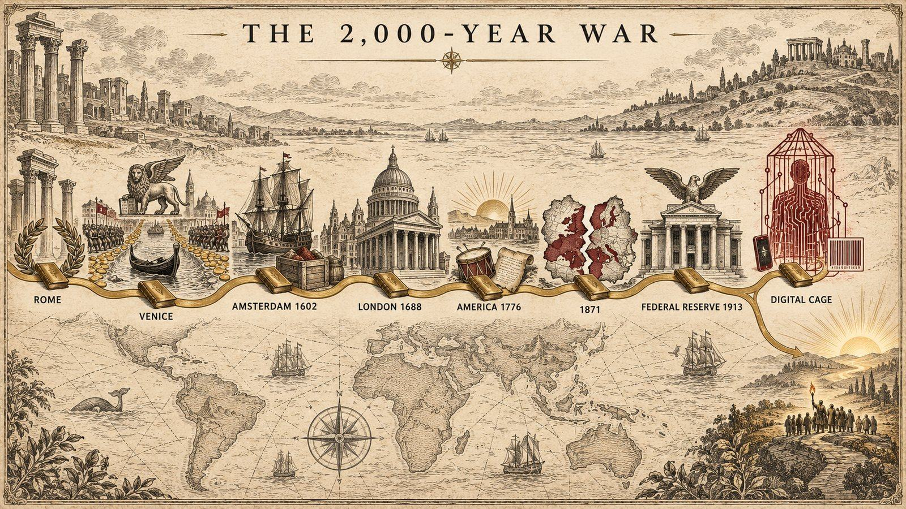

La « guerre de 2 000 ans » du général HoltGeneral Holt's "two-thousand-year war"
DébattuContestedBlaine Holt, Storm Summit de Las Vegas, 11 septembre 2026Blaine Holt, Storm Summit, Las Vegas, September 11, 2026
En dix-sept minutes, un général de l'US Air Force à la retraite déroule deux millénaires : une même élite financière se serait transmise de Rome à Venise, d'Amsterdam à Londres, puis aurait repris en main l'Amérique, jusqu'aux monnaies numériques et à l'identité numérique d'aujourd'hui. Le noyau historique existe en version savante ; la lignée unique et le plan transmis, eux, ne peuvent être ni prouvés ni réfutés.In seventeen minutes, a retired US Air Force general unrolls two millennia: a single financial elite would have passed itself down from Rome to Venice, from Amsterdam to London, then retaken America, all the way to today's digital currencies and digital ID. The historical kernel exists in a scholarly version; the single lineage and the handed-down plan can be neither proven nor refuted.

Ce que dit le document
C'est le document le plus ample de la section par son échelle, et le second que nous classons « Débattu ». Le général de brigade Blaine Holt, aviateur de l'US Air Force à la retraite, ancien représentant militaire adjoint des États-Unis auprès de l'OTAN, chroniqueur sur Newsmax et proche de Promethean Action, s'exprime devant un public militant, au Storm Summit de Las Vegas, le 11 septembre 2026. Le format est celui d'une conférence courte et mobilisatrice : dix-sept minutes pour raconter deux mille ans. Ce qui suit reconstitue son récit étape par étape, avant de le confronter à ce que l'on sait.
Le récit, étape par étape
Rome et Venise. Le point de départ est l'Empire romain, dont les techniques de contrôle par la dette et la monnaie auraient été recueillies, après sa chute, par les familles marchandes de Venise. La République de Venise devient dans ce récit la matrice d'un art : financer les deux camps de chaque conflit, prêter aux princes, vivre du commerce et de l'intermédiation plutôt que de la production.
Amsterdam, 1602. Le relais passe ensuite aux Provinces-Unies. La Compagnie néerlandaise des Indes orientales, fondée en 1602, est présentée comme la première société par actions capable de lever une armée, de battre monnaie et de faire la guerre pour ses actionnaires : la fusion du capital et de la force.
Londres, 1688. Avec la Glorieuse Révolution et l'arrivée de Guillaume d'Orange sur le trône d'Angleterre, ce savoir-faire financier traverserait la mer du Nord. La Banque d'Angleterre, en 1694, en serait l'aboutissement : une banque privée qui prête à l'État et transforme la dette publique en instrument de pouvoir. La City de Londres devient dès lors, dans le récit de Holt, le siège permanent de cette élite.
L'Amérique, de 1776 à 1871. La Révolution américaine est lue comme la première menace sérieuse contre ce système : une république continentale, productive, qui refuse la dette perpétuelle. La guerre de 1812 en serait la revanche, la guerre de Sécession une division fabriquée pour affaiblir l'Union, et l'année 1871 le moment où, selon lui, « l'Amérique devient une société commerciale » détenue par ses créanciers.
Wilson et la Réserve fédérale. L'époque de Woodrow Wilson est le tournant du récit : la loi créant la Réserve fédérale en 1913, l'impôt fédéral sur le revenu, l'entrée en guerre, et, dans le même mouvement, la révolution bolchevique et le renseignement britannique sont rattachés à une seule reprise en main. Le XXᵉ siècle n'est plus qu'une consolidation.
Les coquilles modernes. Les institutions issues de la Seconde Guerre mondiale, l'ONU, l'Organisation mondiale de la santé, et avant elles la Banque des règlements internationaux, sont décrites comme les enveloppes actuelles du même pouvoir, avec les accords de Bretton Woods comme charte.
L'étage suivant. Enfin, les monnaies numériques de banque centrale, l'identité numérique et le crédit social formeraient la dernière étape, que Holt appelle des « cages pour les âmes » : un contrôle qui ne passe plus par la force mais par l'accès à l'argent et aux services. Il nomme l'ensemble « guerre de cinquième génération », un conflit conçu pour que ses victimes ne puissent même pas le nommer, et il l'oppose au camp des « souverainistes », dont Trump serait la « force disruptive ».
What the document says
This is the broadest document of the section in scale, and the second we label "Contested." Brigadier General Blaine Holt, a retired US Air Force aviator, former deputy US military representative to NATO, Newsmax contributor and close to Promethean Action, speaks to an activist audience at the Storm Summit in Las Vegas on September 11, 2026. The format is that of a short, mobilizing talk: seventeen minutes to tell two thousand years. What follows reconstructs his narrative step by step, before confronting it with what is known.
The narrative, step by step
Rome and Venice. The starting point is the Roman Empire, whose techniques of control through debt and money would have been picked up, after its fall, by the merchant families of Venice. The Republic of Venice becomes in this account the matrix of an art: funding both sides of every conflict, lending to princes, living from trade and intermediation rather than production.
Amsterdam, 1602. The baton then passes to the United Provinces. The Dutch East India Company, founded in 1602, is presented as the first joint-stock company able to raise an army, mint coin and wage war for its shareholders: the fusion of capital and force.
London, 1688. With the Glorious Revolution and William of Orange's arrival on the English throne, this financial know-how would cross the North Sea. The Bank of England, in 1694, would be its culmination: a private bank that lends to the state and turns public debt into an instrument of power. From then on, in Holt's account, the City of London becomes the permanent seat of this elite.
America, from 1776 to 1871. The American Revolution is read as the first serious threat to this system: a continental, productive republic that refuses perpetual debt. The War of 1812 would be the rematch, the Civil War a division manufactured to weaken the Union, and the year 1871 the moment when, in his words, "America becomes a corporation" owned by its creditors.
Wilson and the Federal Reserve. The Woodrow Wilson era is the turning point of the narrative: the act creating the Federal Reserve in 1913, the federal income tax, the entry into the war, and, in the same motion, the Bolshevik revolution and British intelligence are tied to a single takeover. The twentieth century becomes mere consolidation.
The modern shells. The institutions born of the Second World War, the UN, the World Health Organization, and before them the Bank for International Settlements, are described as the current envelopes of the same power, with the Bretton Woods agreements as their charter.
The next floor. Finally, central bank digital currencies, digital ID and social credit would form the last stage, which Holt calls "soul cages": control that no longer runs through force but through access to money and services. He names the whole "fifth-generation warfare," a conflict designed so that its victims cannot even name it, and sets it against the camp of the "sovereigntists," of whom Trump would be the "disruptive force."
Vérifiable, ou pas
Socle documenté
- La Compagnie néerlandaise des Indes orientales (1602), première grande société par actions, dotée de pouvoirs quasi souverains ; la Banque d'Amsterdam (1609) ; le rôle des financiers hollandais dans l'Angleterre de Guillaume III ; la Banque d'Angleterre (1694) créée pour prêter à l'État.
- Le Federal Reserve Act signé par Wilson en décembre 1913, l'impôt fédéral sur le revenu la même année, la Banque des règlements internationaux (1930), Bretton Woods (1944), l'ONU (1945) et l'OMS (1948).
- Les projets réels de monnaies numériques de banque centrale et d'identité numérique dans de nombreux pays, et le débat légitime sur leurs risques pour les libertés.
- La succession historique des centres financiers, décrite par l'historiographie économique sans recours à une lignée.
Reste à démontrer
- La continuité d'une même élite de Rome à nos jours : aucune source ne documente une telle transmission, et l'énoncé est construit de manière à ne pouvoir être ni prouvé ni réfuté.
- L'affirmation que les États-Unis seraient « devenus une société commerciale » en 1871 : la loi de cette année-là, le District of Columbia Organic Act, organise le gouvernement municipal de la capitale fédérale, et cette légende circule depuis des décennies.
- Le rattachement du renseignement extérieur britannique à l'époque de Wilson : le Secret Service Bureau, ancêtre du MI6, est fondé en 1909, sans rapport avec le président américain.
- Le financement de la révolution bolchevique par la finance occidentale, thèse ancienne et contestée, fondée sur des indices fragmentaires.
- La lecture de la guerre de 1812 comme « revanche » et de la guerre de Sécession comme « division fabriquée », que l'historiographie explique par des causes internes documentées.
Checkable, or not
Documented base
- The Dutch East India Company (1602), the first great joint-stock company, endowed with near-sovereign powers; the Bank of Amsterdam (1609); the role of Dutch financiers in William III's England; the Bank of England (1694) created to lend to the state.
- The Federal Reserve Act signed by Wilson in December 1913, the federal income tax the same year, the Bank for International Settlements (1930), Bretton Woods (1944), the UN (1945) and the WHO (1948).
- Real central bank digital currency and digital ID projects in many countries, and the legitimate debate about their risks for civil liberties.
- The historical succession of financial centers, described by economic historiography without any recourse to a lineage.
Still to be shown
- The continuity of a single elite from Rome to the present: no source documents such a transmission, and the claim is built so that it can be neither proven nor refuted.
- The assertion that the United States "became a corporation" in 1871: that year's act, the District of Columbia Organic Act, organized the municipal government of the federal capital, and the legend has circulated for decades.
- Tying British foreign intelligence to the Wilson era: the Secret Service Bureau, ancestor of MI6, was founded in 1909, with no connection to the American president.
- The funding of the Bolshevik revolution by Western finance, an old and contested thesis resting on fragmentary clues.
- The reading of the War of 1812 as a "rematch" and of the Civil War as a "manufactured division," which historiography explains by documented internal causes.
Lecture critique
La lecture critique est ici la plus ferme de la section, avec celle de la « guerre fictive », et il faut distinguer trois niveaux. Le premier est celui des erreurs factuelles, énumérées ci-dessus : 1871, le renseignement britannique, et quelques raccourcis de chronologie. Elles ne détruisent pas à elles seules un récit, mais elles indiquent une méthode qui part de la conclusion et recrute les dates ensuite.
Le deuxième niveau est celui de la structure du récit. L'idée de familles qui se transmettraient le pouvoir financier pendant deux mille ans est invérifiable par construction : aucune archive ne peut l'établir, aucune ne peut la réfuter, et chaque fait nouveau peut y être absorbé. Or c'est précisément le moule dans lequel se sont coulées, historiquement, les pires théories du bouc émissaire. Holt ne désigne aucun groupe, et cette chronique ne lui prête rien de tel ; mais le lecteur doit apprendre à repérer le moment où une explication par les structures glisse vers une explication par la généalogie. C'est l'objet du garde-fou n°6, et la comparaison avec Arrighi montre qu'on peut raconter la même succession de places financières sans franchir ce pas.
Le troisième niveau est celui de l'usage. Le récit de Holt est clair, optimiste et mobilisateur, ce qui explique son audience : il donne un sens à des événements dispersés, désigne un camp, promet une issue. Sa conclusion, Trump comme « force disruptive » au service des souverainistes, le range sans ambiguïté du côté du plaidoyer politique. Rien n'interdit de plaider, mais le lecteur doit savoir qu'il écoute un plaidoyer et non une enquête. Il y a pourtant, au bout de cette conférence, une question sérieuse que les faits autorisent : les infrastructures numériques de la monnaie et de l'identité, si elles sont déployées sans garde-fous juridiques, donneraient à ceux qui les contrôlent un pouvoir sans précédent. Cette question mérite mieux que deux mille ans de lignée pour être posée ; elle se pose très bien au présent, avec des textes de loi, des institutions nommées et des décisions datées.
Critical reading
The critical reading is the firmest in the section here, together with the "fake war" entry, and three levels need separating. The first is that of factual errors, listed above: 1871, British intelligence, and a few chronological shortcuts. On their own they do not destroy a narrative, but they point to a method that starts from the conclusion and recruits the dates afterwards.
The second level is the structure of the narrative. The idea of families handing down financial power for two thousand years is unverifiable by construction: no archive can establish it, none can refute it, and every new fact can be absorbed into it. And that is precisely the mold into which, historically, the worst scapegoat theories have been poured. Holt names no group, and this case study attributes nothing of the kind to him; but the reader must learn to spot the moment when an explanation by structures slides into an explanation by genealogy. That is the point of guardrail 6, and the comparison with Arrighi shows that the same succession of financial centers can be told without taking that step.
The third level is that of use. Holt's narrative is clear, optimistic and mobilizing, which explains its audience: it gives meaning to scattered events, names a side, promises a way out. Its conclusion, Trump as a "disruptive force" on behalf of the sovereigntists, places it unambiguously on the side of political advocacy. There is nothing wrong with advocacy, but the reader should know they are listening to a plea rather than an inquiry. And yet, at the end of this talk, there is a serious question the facts do allow: digital infrastructures for money and identity, if deployed without legal safeguards, would give those who control them unprecedented power. That question deserves better than two thousand years of lineage to be raised; it can be raised very well in the present tense, with pieces of legislation, named institutions and dated decisions.